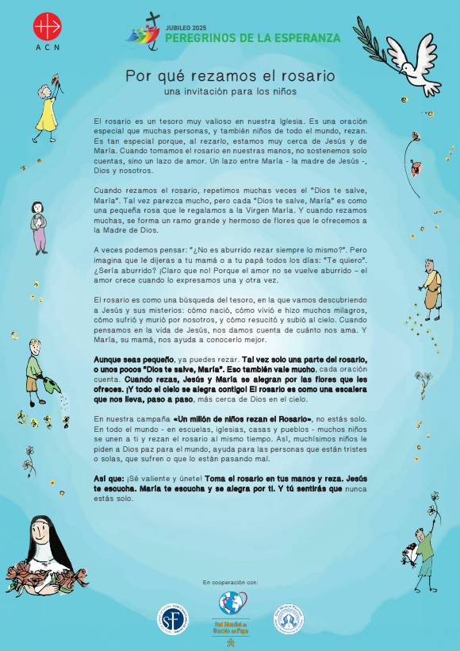

Haz tu pulsera del rosario

“Me preguntas por un método para alcanzar la perfección. Yo conozco el amor y solo el amor.”

— Santa Teresita del Niño Jesús


Hoy vuelvo a hacer un fuerte llamamiento tanto a las partes implicadas como a la comunidad internacional para que pongan fin al conflicto en Tierra Santa, que ha causado tanto terror, destrucción y muerte.
— Papa León XIV (@Pontifex_es) 27 ago 2025
Hojas para colorear, pulseras del rosario, y materiales sencillos para rezar y aprender.
Si el visor no carga en local, usa “Abrir” o prueba en el sitio publicado.

DIOS TE SALVE MARIA
JONÁS Y LA BALLENA